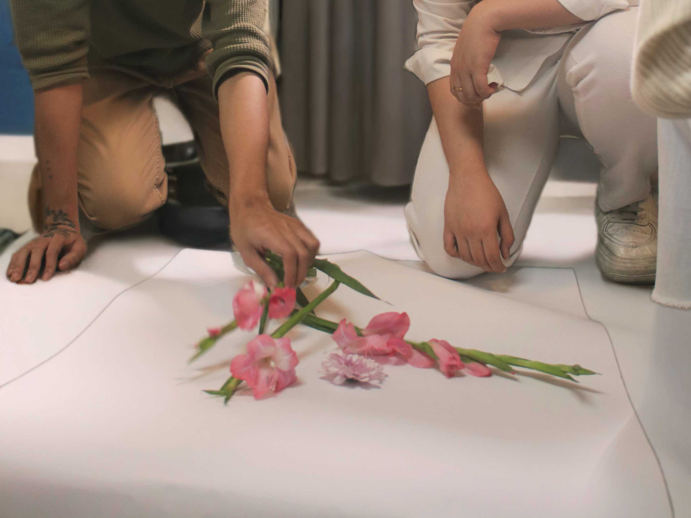
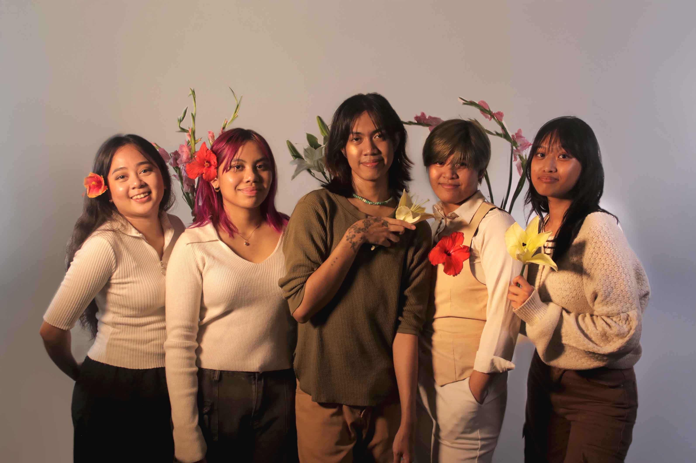

See how sustainability is leading the way in reshaping the cosmetics industry and why choosing sustainable practices is crucial for building a brand that lasts.
Learn MoreAt Foundation for the Future, we passionately advocate for sustainable cosmetics by collaborating with like-minded individuals to educate, encourage, and promote environmentally responsible practices.
About Us